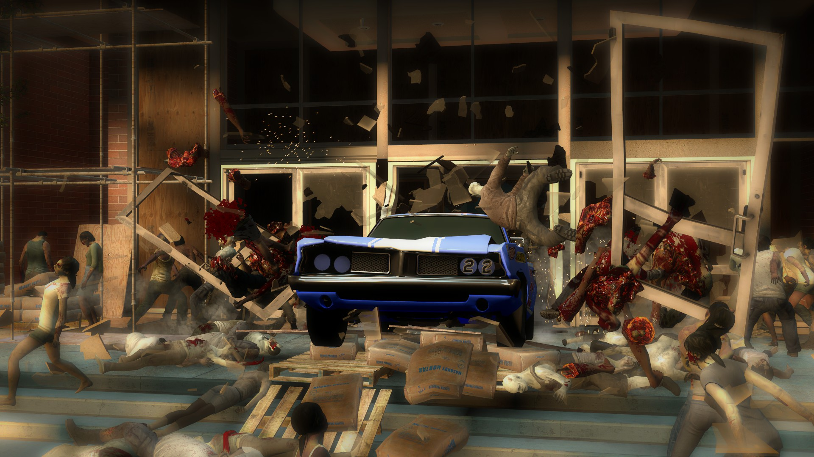

Este es la primera campaña de Left 4 Dead 2. Esta campaña introduce por primera vez a los cuatro sobrevivientes: Coach, Ellis, Nick y Rochelle.
La campaña comienza con los sobrevivientes en el tejado del hotel Vannah donde esperaban encontrar refugio y tal vez rescate. Sin embargo todo el hotel está infestado de zombis y su única opción es abrirse paso por las hordas de infectados para llegar al Centro Comercial y poder robar un automovil para escapar.
El primer capitulo tiene lugar en el hotel Vannah que esta lleno de infectados. Los sobrevivientes deben atravesar varios pisos, enfrentándose a hordas de zombis e infectados especiales como los Smokers, Hunters y Boomers. La misión principal es llegar al ascensor que los llevará a los pisos inferiores y eventualmente al refugio que se encuentra en la entrada del hotel.
Después de salir del hotel, los sobrevivientes se encuentran en las calles de Savannah. Este nivel pasa un entorno urbano con calles y edificios abandonados. Los sobrevivientes deben abrirse camino a través de varias barricadas puestas por la C.E.D.A. y evitar las emboscadas de infectados especiales de los Chargers y Jockeys. Lo más importante es la misión principal que es llegar al centro comercial en busca de otro puesto de la C.E.D.A.
La tercera parte sucede dentro del centro comercial que está completamente infestado. Los sobrevivientes deben abrirse paso a través de las tiendas y los pasillos por todo el centro comercial. El diseño laberíntico del centro comercial hace que sea fácil perderse, y las constantes hordas de zombis hace que te mantengas en un estado alerta máxima la mayoria de tiempo. Lo importante de esta misión es llegar al atrio del centro comercial donde espera su metodo de escape.
La cuarta parte tiene lugar en la entrada principal del centro comercial. Los sobrevivientes deben encender un auto de carreras para escapar del centro comercial. Esta parte es un enfrentamiento final donde los sobrevivientes deben defenderse de múltiples oleadas de zombis mientras llenan el tanque de gasolina del auto. La presión aumenta cuando los Tanks y la gasolina del auto todavía no ha sido llenada al completo. El final de la campaña muestra el auto de carreras escapando del centro comercial.
